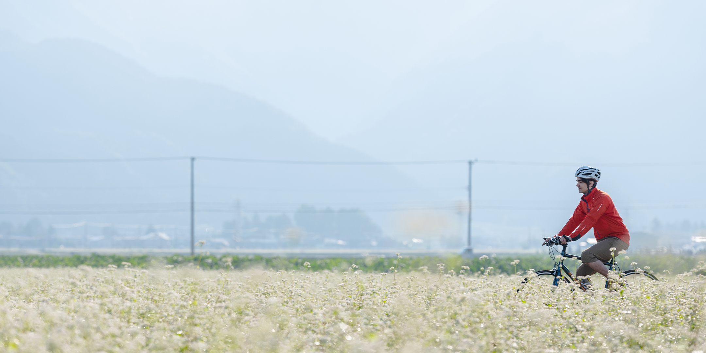
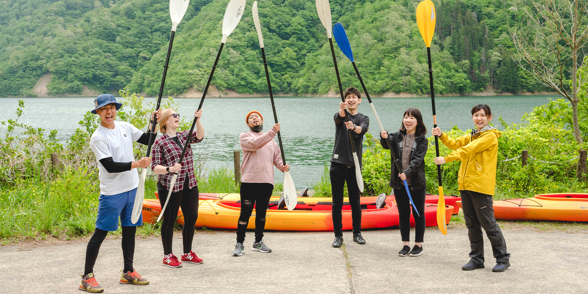

{{section.name}}


manmaru
みんな「まんまる」につながろう。
私たちは、人、山、川、土、生物、まち。
多様な存在のつながりを、
創っていく仲間です。
{{sections['feature'].name}}
{{item.heading}}
{{sections['service'].name}}
{{item.heading}}
{{item.excerpt}}
{{sections['service'].more}}
{{sections['news'].name}}
{{item.date}}
{{tag}}
{{item.heading}}
{{item.excerpt}}
{{sections['news'].more}} >
{{sections['about'].name}}
{{sections['about'].excerpt}}
{{sections['about'].more}}
{{sections['access'].name}}
{{sections['contact'].name}}
氏名
メールアドレス
表題
お問い合わせ内容